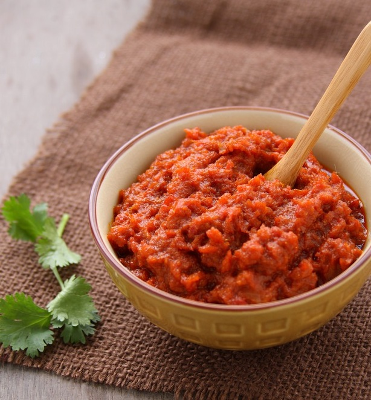

Onion Masala Sauce
Ingredients
- 30g/1oz root ginger, peeled
- 30g/1oz garlic cloves, peeled
- 2 tbsp vegetable oil
- 2 black cardamom
- 10 black peppercorns
- 3 cloves
- 4 green cardamom
- 2 tsp cumin seeds
- 2 cinnamon sticks
- 1 bay leaf
- 500g/1lb 2oz onions, chopped
- 1 tbsp ginger garlic paste (from above)
- 1 tsp ground turmeric
- 5 tsp red chilli powder
- 1 tbsp ground coriander
- 1 tsp garam masala
- salt, to taste
- 2 tbsp tomato puree
Preparation method
First prepare the ginger garlic paste. Blend the ginger and garlic with a teaspoon of water in a blender. Store any you dont use for this recipe in the fridge. To make the masala sauce, heat the oil in a large frying pan. Add the whole spices (black cardamom, peppercorns, cloves, green cardamom, cumin seeds, cinnamon and bay leaf) and fry until they start to crackle, then add the onions. Cook the onions gently and slowly until caramelised and very dark brown. Add a tablespoon of the ginger garlic paste and fry gently for 3-4 minutes. Taste to make sure the ginger and garlic are well cooked otherwise their flavour will be too strong. Add all the powdered spices and mix well. Add 100-150ml/3-5fl oz water if the sauce is too thick. Finally add the tomato puree and cook until the oil comes to the surface of the sauce.